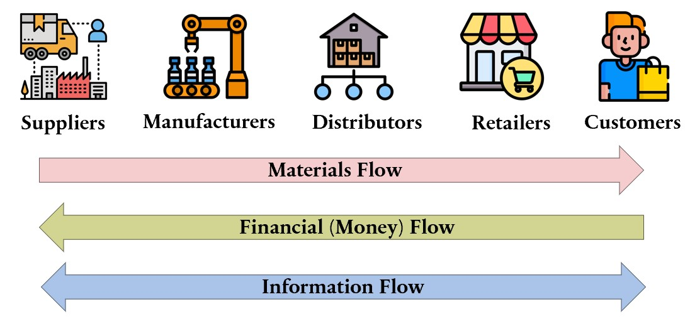
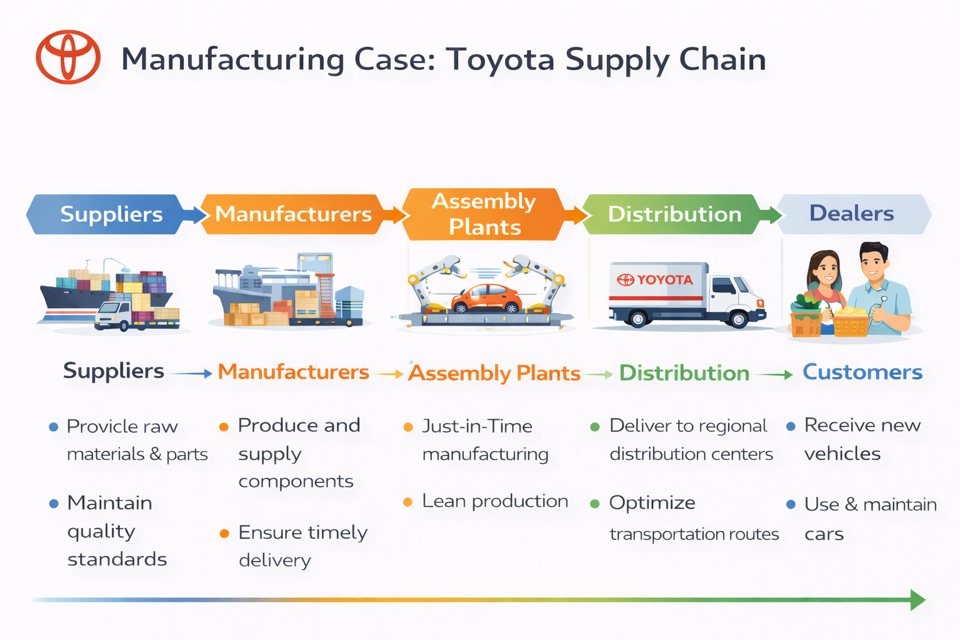
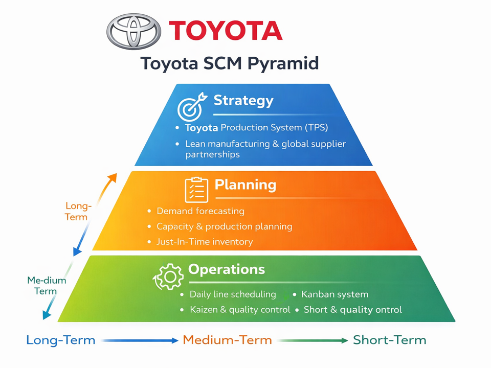
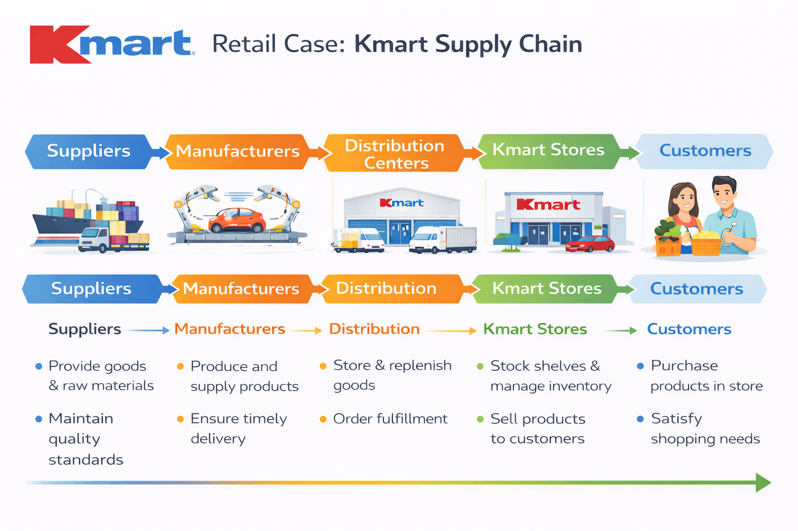
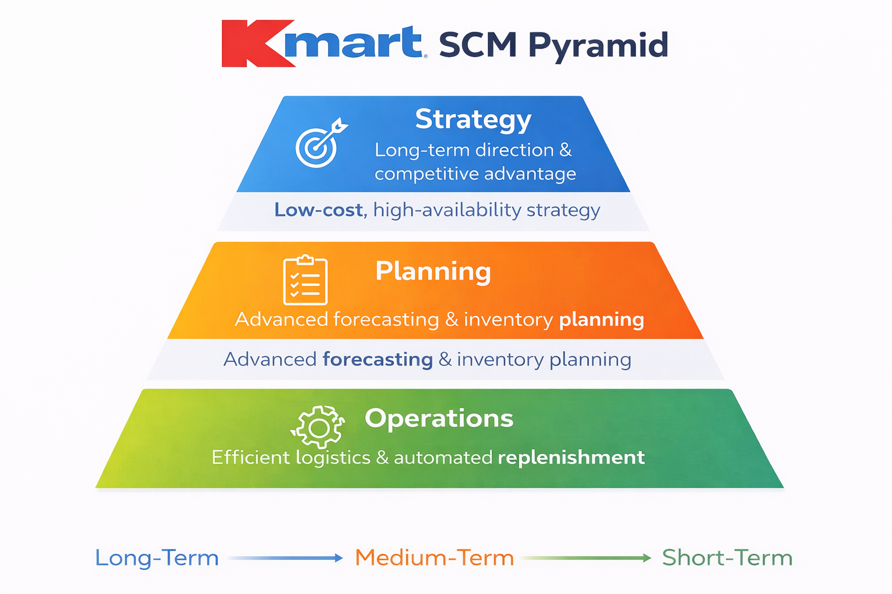
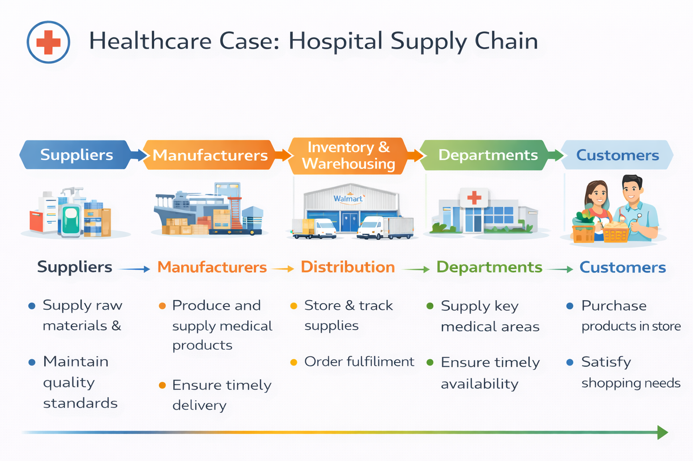
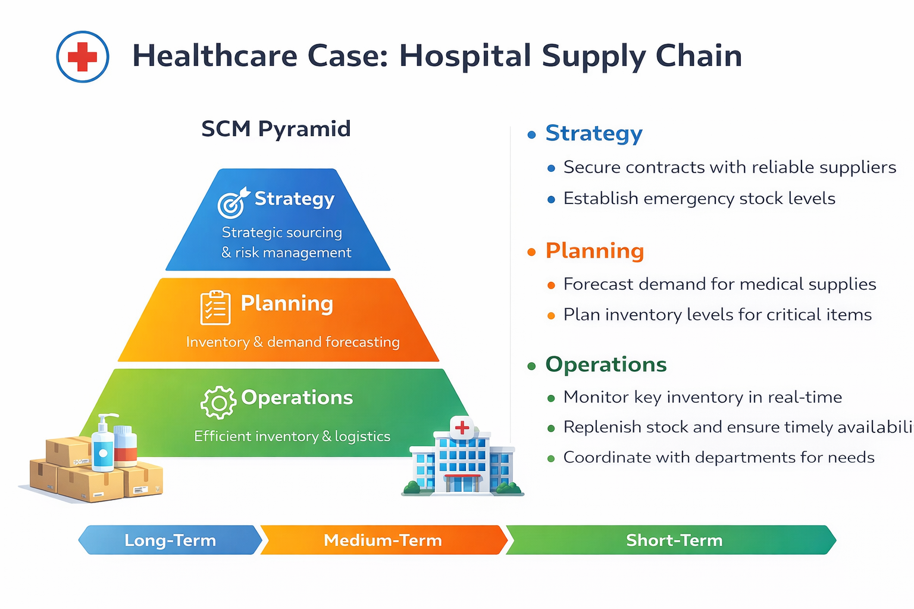

Topic 1: Introduction to Supply Chain and Optimisation
05115130 Supply Chain Modelling and Optimisation
Lecturer: Sam Wiwatanapataphee
School of EECMS, Curtin University
4 Jun 2026
Unit Contents
I. Logistics Network Design
Single-Echelon Single-Commodity (SESC) Location Models;
Two-Echelon Multi-Commodity (TEMC) Location Models;
Network Design under Uncertainty
II. Demand Forecasting
Time Series Regression Models;
Time Series Decomposition
III. Inventory Models
Deterministic: Single Commodity, Discount & Multicommodity;
Stochastic: Single-Period & Multi-Period Models
Now let’s take a closer look at the core content of this unit.
The unit is organised into three major themes: Logistics Network Design, Demand Forecasting, and Inventory Models.
_ Begin with Logistics Network Design, which focuses on how supply chain networks are structured and optimised.
First, we’ll study Single-Echelon, Single-Commodity Location Models.
These models help us determine the optimal location of facilities—such as warehouses or distribution centres—when dealing with one product and one level of distribution.
Next, we move to Two-Echelon, Multicommodity Location Models.
Here, the system becomes more realistic and complex. We consider multiple layers in the supply chain — for example, factories and warehouses — and multiple products flowing through the network.
Finally, we’ll examine Network Design under Uncertainty. In reality, demand, costs, and supply conditions are rarely certain. We will learn how to incorporate uncertainty into our models to make more robust strategic decisions.
The second theme is Demand Forecasting.
Accurate forecasts are critical because SC decisions rely heavily on future demand estimates.
We’ll cover Time Series Regression Models, which use historical data to identify trends and relationships.
We’ll also study Time Series Decomposition, where we break demand data into components such as trend, seasonality, and random variation. This helps us better understand patterns and improve forecast accuracy.
The third major component is Inventory Models.
We begin with Deterministic Inventory Models, where demand is assumed to be known and constant.
Then we move to Stochastic Inventory Models, where demand is uncertain.
1. Introduction to Supply Chain
1.1 What is Supply Chain (SC)?
A SC is a network of individuals and companies involved in the production & distribution of goods or services, from raw material suppliers to manufacturers, …, to the end customers.
Now let’s begin with the fundamental question: What is a SC?
A SC is a network of individuals and organisations involved in producing and delivering goods or services — starting from raw material suppliers and ending with the final customer.
It is important to emphasise the word network. A supply chain is not just one company. It includes multiple interconnected entities working together to create value.
Let’s walk through the typical stages shown in this diagram.
At the beginning of the supply chain, we have suppliers providing raw materials or basic components to manufacturers. For example, steel suppliers provide materials to car manufacturers, or farmers supply ingredients to food producers. Without suppliers, production cannot begin.
Next are the manufacturers transforming raw materials into finished or semi-finished goods. They usually produce goods in large quantities using machinery, labour, and technology. This is where value is significantly added to the product.
After production, goods move to distributors. Distributors are responsible for storing and transporting products to retailers or other businesses. This often involves warehouses, logistics centres, and transportation systems. Their role is to ensure products are available where and when they are needed.
Next, we have retailers. Retailers sell goods directly to consumers. Examples include supermarkets, shops, and online stores. They are the link between businesses and final customers.
Finally, at the end of the supply chain, we have the customers. Customers purchase and use the products. Ultimately, the entire supply chain exists to satisfy customer demand.
1.2 Supply Chain Network Flows

Logistics is the process of coordinating the efficient flow of goods, services, and related information. It involves planning, implementing, and controlling the movement and sometimes warehousing of goods throughout the supply chain. Logistics is a critical component that holds the supply chain together.
On this slide, we can see the structure of a typical SC network and 3 key flows that connect all participants. At the top, we have the main supply chain actors: Suppliers – provide raw materials or components; Manufacturers – convert raw materials into finished products; Distributors – store and transport products in bulk; Retailers – sell products to end users; Customers – The final consumers of the product.
Now let’s look at the three major flows that link these entities:
First, the Materials Flow. This moves from left to right — starting with suppliers and ending with customers. It represents the physical movement of raw materials, components, and finished goods across the supply chain.
Second, the Financial or Money Flow. This moves in the opposite direction — from customers back to suppliers. Customers pay retailers, retailers pay distributors, distributors pay manufacturers, and manufacturers pay suppliers. This backward flow represents payments, credit terms, and financial transactions.
Third, the Information Flow. This flow moves in both directions. Information includes demand forecasts, order details, inventory levels, delivery status, and production schedules. Effective information sharing is critical because it coordinates activities and reduces uncertainty across the supply chain.
1.3 Roles of Logistics in Supply Chain
Transportation management
Planning, organising, and executing movement of goods from one place to another.
Warehousing & inventory management
Managing inventory levels, storing, and retrieving products
Order fulfillment
Handling customer orders from initial receipt to delivery. (Customer services)
Packaging
Designing, producing, and delivering packaging materials and supplies to warehouses
Reverse logistics
Returning goods to their original manufacturer after they have been used.
Static Facilities in Supply Chain
Plant/Factory Supplier/Manufacturer
Produces or manufactures goods
Warehouse Distributor
Stores and holds inventory; often receives shipments from suppliers
Distribution Centre Distributor/Wholesaler
Receives, processes, and sends out orders to customers
Fulfillment Centre Distributor
Reorders and prepares products for shipping to customers
Cross Dock Distributor
Direct transfer of goods from vehicles to vehicles
Locker Distributor
Stores non-perishable materials temporarily while being moved between facilities (e.g., inventory, shipping)
Service Outlet Retailer/Service Provider
Provides value-added services to customers (e.g., repair, maintenance, consulting)
Parking Lot Dispatcher
Supports the movement of personnel and vehicles within the facility
Collection Centre Collector
Collects and stores waste materials or hazardous goods temporarily until disposal
Disposal Centre Disposer
Handles the removal and destruction of unwanted or hazardous materials
This slide lists the static facilities commonly found in supply chains, along with their roles and operations.
Fulfillment centre: small distribution hubs located at various locations to improve delivery speed and customer service. They receive products from manufacturers or warehouses, process orders, and prepare items for shipping to customers.
1.4.1 Strategy (Long-term)
Aligns with competitive strategy
Efficiency vs. Responsiveness
Network design
Make-or-buy decisions
Sustainability & risk management
Example
This slide explains the strategic, long-term level of SCM.
SC strategy must align with the company’s overall competitive strategy.
If a company competes on low cost, its SC should focus on efficiency. If it competes on speed or customization, it should focus more on responsiveness.
Key strategic decisions include network design — such as where to locate factories and warehouses
Make-or-buy decisions, meaning whether to produce internally or outsource.
Sustainability and risk management are also important at this level.
For example, IKEA supports its low-cost strategy through flat-pack designs, which reduce transportation and logistics costs.
1.4.2 Planning (Medium-term)
Example Kmart uses demand forecasts to plan inventory before holiday seasons
This slide focuses on the planning level of SCM, which is medium-term. Planning connects long-term strategy with daily operations.
One key activity is demand forecasting, where companies predict future customer demand.
Based on forecasts, companies conduct aggregate and capacity planning to ensure they have enough production resources.
They also perform inventory planning to determine how much stock to hold and where to store it.
Another important process is Sales and Operations Planning, or S&OP, which aligns sales forecasts with production and supply capabilities.
Finally, planning includes distribution and procurement decisions, ensuring products and materials are available at the right time and place.
For example, Kmart uses demand forecasts to increase inventory before holiday seasons to meet higher customer demand.
1.4.3 Operation (Short-term)
Order management
Production scheduling
Inventory & warehouse operations
Transportation & logistics
Quality & reverse logistics
Example McDonald’s manages daily food deliveries to ensure freshness
This slide focuses on the operational, short-term level of SCM. Operations deal with daily execution activities.
This includes order management, which ensures customer orders are processed accurately and on time.
It also involves production scheduling, where companies decide what to produce and when.
Another key area is inventory and warehouse operations, managing stock levels and storage efficiently.
Operations also cover transportation and logistics, ensuring products are delivered quickly and cost-effectively.
Finally, it includes quality management and reverse logistics, such as handling returns and defective products.
For example, McDonald’s manages daily food deliveries worldwide to ensure freshness and consistent quality.
1.5 Push vs. Pull Strategy in SC Management
Supply chains can be managed using push, pull, or a hybrid (push–pull) strategy, depending on how demand information is used.
1.5.1 Push Strategy
A push strategy is driven by demand forecasts. Products are produced and distributed in advance, before actual customer orders are received.
Based on forecasted demand
Production starts before customer orders
Suitable for stable and predictable demand
Focuses on high capacity utilization and low cost
This slide introduces Push versus Pull strategies in SCM. SC can be managed using a push strategy, a pull strategy, or a hybrid approach, depending on how demand information is used.
Let’s first focus on the Push Strategy.
A push strategy is driven by demand forecasts. Companies produce and distribute products in advance, before receiving actual customer orders.
The key characteristics are:
First, it is based on forecasted demand.
Second, production starts before customer orders are placed.
Third, it is most suitable for stable and predictable demand.
Finally, it focuses on high capacity utilization and low production costs, often benefiting from economies of scale.
In summary, a push strategy highlights efficiency and cost reduction, but it depends heavily on the accuracy of demand forecasts.”
Advantages
Economies of scale
Lower production costs
Efficient for mass production
Disadvantages
Risk of overproduction
High inventory holding costs
Less responsive to demand changes
Consumer packaged goods (e.g., canned food, detergents)
Traditional manufacturing with long lead times
Now let’s look at the advantages and disadvantages of the push strategy.
Starting with the advantages:
Push systems benefit from economies of scale, since large production batches reduce the cost per unit.
They also lead to lower production costs due to efficient resource utilization.
This approach is highly efficient for mass production, especially when demand is stable and predictable.
However, there are also disadvantages.
There is a risk of overproduction if forecasts are inaccurate.
It can result in high inventory holding costs, because products are produced before actual demand is confirmed.
And finally, push systems are less responsive to sudden demand changes.
Typical examples include consumer packaged goods, such as canned food or detergents,
and traditional manufacturing industries with long lead times.
In summary, push strategy works best in stable environments but carries forecasting risks.”
1.5.2 Pull Strategy
A pull strategy is driven by actual customer demand. Products are produced only after an order is received.
Based on real customer orders
Production starts after demand is known
Suitable for uncertain or customized demand
Focuses on responsiveness and flexibility
Now let’s look at the Pull Strategy.
Unlike the push strategy, a pull strategy is driven by actual customer demand. Products are produced only after a customer order is received.
The key characteristics are:
First, it is based on real customer orders rather than forecasts.
Second, production starts only after demand is confirmed.
Third, it is suitable for uncertain, variable, or customized demand.
And finally, it focuses on responsiveness and flexibility rather than cost efficiency.
This approach reduces the risk of overproduction and excess inventory, but it may require flexible production systems and shorter lead times.
In summary, the pull strategy prioritizes responsiveness and customer satisfaction, especially in dynamic or customized markets.”
Advantages
Lower inventory levels
Reduced risk of excess stock
High customer satisfaction
Disadvantages
Higher unit costs
Requires fast response and flexible systems
Possible delays if capacity is limited
Custom-made products
Dell’s build-to-order computers
Fast fashion (partially pull-based)
1.5.3 Push–Pull Strategy (Hybrid)
Upstream activities (suppliers, manufacturing) use push
Downstream activities (final assembly, distribution) use pull
Component sourcing based on forecasts
Large-scale manufacturing
Final assembly & regional distribution
Customer demand via online & retail stores
This slide explains the Push–Pull Strategy, also known as the hybrid strategy. In this approach, part of the supply chain operates under a push system, while the other part operates under a pull system.
Typically, upstream activities, such as suppliers and large-scale manufacturing, use a push approach based on demand forecasts.
Meanwhile, downstream activities, such as final assembly and distribution, use a pull approach based on actual customer demand.
The key concept here is the push–pull boundary. Before this boundary, activities are forecast-driven. After this boundary, activities are demand-driven.
For example, Apple uses this hybrid model.
It sources components and conducts large-scale manufacturing based on forecasts — this is the push part.
However, final assembly and regional distribution respond more closely to actual customer demand — this is the pull part.
In summary, the push–pull strategy combines efficiency upstream with responsiveness downstream.
Push for parts production, pull for assembly using Just-In-Time.
Push (Forecast-driven upstream):
Suppliers → Parts Production
Assembly Plants (Just-In-Time)
Pull (Demand-driven downstream)
Distribution → Dealers → Customers
Suppliers → Parts → Assembly Plants → Distribution → Dealers → Customers PUSH PUSH BOUNDARY PULL PULL PULL
Toyota applies a hybrid approach. It uses push for parts production and pull for final assembly through its Just-In-Time, or JIT, system.
Upstream, in the push stage, suppliers produce parts based on forecasts. This ensures efficiency and stable production.
The push–pull boundary occurs at the assembly plants. Here, Toyota applies Just-In-Time principles, meaning parts arrive exactly when needed for assembly.
Downstream, the system becomes pull-based. Distribution to dealers and final sales to customers are driven by actual demand.
So the flow is: Suppliers to parts production — push.
Assembly plants — the boundary.
Then distribution, dealers, and customers — pull.
In summary, Toyota combines forecast-driven efficiency upstream with demand-driven responsiveness downstream, achieving both cost control and flexibility.
1.6 Case Studies
Manufacturing Case: Toyota
High inventory cost & production inefficiencies
Implement Just-In-Time (JIT) and lean supply chain strategy
Reduced inventory, faster production cycles, lower costs
This slide presents Toyota’s manufacturing case study.
The problem was high inventory costs and production inefficiencies, which increased expenses and reduced flexibility.
Toyota’s decision was to implement Just-In-Time, or JIT, along with a lean supply chain strategy. This approach focuses on producing and delivering parts only when they are needed, reducing waste.
The outcome was lower inventory levels, faster production cycles, and reduced costs.
In summary, Toyota improved efficiency and competitiveness by adopting a lean, demand-driven production system.

This slide shows the overall structure of Toyota’s supply chain, from suppliers to customers.
It begins with suppliers, who provide raw materials and parts while maintaining strict quality standards.
Next are the manufacturers, who produce and supply components, ensuring timely delivery to the next stage.
At the assembly plants, Toyota applies Just-In-Time and lean production principles. Parts arrive exactly when needed, reducing inventory and eliminating waste.
After assembly, vehicles move to distribution centers, where Toyota optimizes transportation routes to ensure efficient delivery.
Then vehicles are sent to dealers, and finally to customers, who receive, use, and maintain their cars.
Overall, this flow demonstrates how Toyota integrates quality control, lean manufacturing, and efficient distribution to create a highly coordinated and cost-effective supply chain.”

This slide presents Toyota’s SCM Pyramid, showing how strategy, planning, and operations are aligned.
At the top is Strategy, which focuses on long-term direction. Toyota’s strategy is built around the Toyota Production System, or TPS, lean manufacturing, and strong global supplier partnerships. This sets the foundation for efficiency and continuous improvement.
In the middle is Planning, which operates at the medium-term level. This includes demand forecasting, capacity and production planning, and Just-In-Time inventory management. Planning ensures that supply matches expected demand.
At the base is Operations, which focuses on short-term daily activities. This includes daily line scheduling, the Kanban system, Kaizen continuous improvement, and strict quality control.
Kanban is a visual pull system that controls production and inventory by producing only what is needed, when it is needed, and in the amount needed.
Kaizen is a philosophy of continuous, small improvements involving everyone to enhance efficiency, quality, and productivity over time.
Overall, the pyramid shows how Toyota integrates long-term strategy, medium-term planning, and short-term operations into one coordinated system.
Toyota SCM Timeline
Plant location
Supplier selection
Technology investment
Production volume planning
Capacity & workforce planning
Line scheduling
Quality checks
On-time delivery
This slide shows Toyota’s SCM timeline across three levels.
At the long-term strategic level, Toyota decides on plant locations, selects suppliers, and invests in technology. These decisions shape the supply chain for years.
At the medium-term planning level, Toyota plans production volumes and manages capacity and workforce to match expected demand.
At the short-term operational level, the focus is on daily line scheduling, quality checks, and ensuring on-time delivery.
Overall, Toyota aligns long-term strategy, monthly planning, and daily operations to maintain efficiency and competitiveness.
Retail Case: Kmart
Demand variability and stockouts across stores
Advanced demand forecasting & centralized planning
High product availability with low inventory costs
This slide presents the Kmart retail case.
The main problem was demand variability and stockouts across stores, leading to lost sales and inefficient inventory levels.
Kmart’s decision was to implement advanced demand forecasting and centralized planning to improve coordination and visibility.
The outcome was higher product availability with lower inventory costs.
In summary, better forecasting and centralized control helped Kmart balance supply and demand more effectively while improving customer service.

This slide illustrates Kmart’s supply chain from suppliers to customers.
Suppliers provide goods and raw materials to manufacturers, who produce and deliver finished products.
These products move to distribution centers, where they are stored and prepared for replenishment.
Next, goods are sent to Kmart stores, where inventory is managed and products are sold.
Finally, customers purchase the products to meet their needs.
Overall, effective coordination across suppliers, distribution centers, and stores ensures product availability and smooth retail operations.

This slide presents Kmart’s Supply Chain Management pyramid, showing how strategy, planning, and operations are aligned.
At the top is Strategy, which focuses on long-term direction and competitive advantage. Kmart follows a low-cost, high-availability strategy, aiming to offer affordable products while keeping shelves well stocked.
In the middle is Planning, which operates at the medium-term level. Kmart uses advanced demand forecasting and inventory planning to better predict customer demand and manage stock levels efficiently.
At the base is Operations, which focuses on short-term daily execution. This includes efficient logistics and automated replenishment systems to ensure products are delivered to stores on time.
Overall, the pyramid shows how Kmart connects long-term strategy, data-driven planning, and efficient operations to improve product availability while controlling costs.
Healthcare Case: Hospital Supply Chain
Shortages of critical medical supplies
Strategic supplier partnerships & safety stock planning
Improved patient care and reduced emergency shortages
This slide presents a healthcare case focusing on a hospital supply chain.
The problem was shortages of critical medical supplies, which directly affected patient care and emergency response.
The decision was to establish strategic supplier partnerships and implement proper safety stock planning. By working closely with reliable suppliers and maintaining buffer inventory for essential items, the hospital reduced supply risks.
The outcome was improved patient care and fewer emergency shortages. Critical supplies became more consistently available, especially during high-demand situations.
In summary, better supplier collaboration and inventory planning strengthened the hospital’s supply chain and enhanced service quality.”

This slide shows the hospital supply chain from suppliers to patients.
Suppliers provide raw materials, and manufacturers produce medical products while ensuring quality and timely delivery.
These products move to inventory and warehousing, where supplies are stored and tracked.
They are then distributed to hospital departments, such as emergency and surgical units, to ensure timely availability.
Finally, patients receive care supported by these supplies.
Overall, the hospital supply chain focuses on reliability, quality, and availability, since shortages can directly affect patient safety.

This slide presents the hospital’s Supply Chain Management pyramid, showing how strategy, planning, and operations are aligned.
At the top is Strategy, which focuses on long-term decisions. Hospitals secure contracts with reliable suppliers and establish emergency stock levels to manage risk and ensure supply continuity.
In the middle is Planning, which operates at the medium-term level. This includes forecasting demand for medical supplies and planning inventory levels for critical items such as medicines and surgical equipment.
At the base is Operations, which focuses on daily activities. Hospitals monitor key inventory in real time, replenish stock as needed, and coordinate closely with departments to ensure timely availability.
Overall, this pyramid shows how strategic sourcing, careful planning, and efficient daily operations work together to support patient care and reduce supply shortages.”
1.7 Supply Chain Network Design
Supply chain network design is the strategic configuration of a supply chain with the following objectives.
Minimise total supply chain cost
Reduce lead time
Improve customer service
Optimise inventory and resources
Increase coordination across the supply chain
Maximise overall supply chain profitability
Supply chain network design refers to the strategic configuration of the supply chain — meaning decisions about the number, location, and capacity of facilities such as factories, warehouses, and distribution centers.
The main objective is to minimize total supply chain cost, including production, transportation, and inventory costs.
At the same time, companies aim to reduce lead time, so customers receive products faster.
Another goal is to improve customer service, ensuring high product availability and reliability.
Network design also helps optimize inventory and resources, avoiding excess stock or underutilized capacity.
It improves coordination across different supply chain partners
and ultimately aims to maximize overall profitability.
The following factors affect network design:
Demand Forecasting
Location of Facilities
Inventory Management
Network Capacity
Supplier & Vendor
Management
Customer Service Levels
Technology & Information Systems
Regulatory & Compliance
Cost Analysis
Risk Management
Sustainability & Environmental Impact
Competitive Factors
Market Dynamics
Globalisation
2. Review of Optimisation Problems
Optimisation is the mathematical discipline that deals with maximising and minimising functions under certain conditions or constraints.
These functions are called objective functions.
There are 2 types of optimisation problems, depending on whether there is constraint on the decision variables \(x\) and \(y.\)
Unconstrained optimisation
\[\min f(x,y) = x^2+2y^2 \]
\[\min f(x,y) = x^2 + 2y^2 \] \[-2<x<5,\, y \ge 1\]
2.1 Local Maximum and Minimum
\[
\begin{align*}
&f'(x^*) = 0,\\
x^* \,&\text{is the critical point}
\end{align*}
\]
\[
\begin{align*}
f''(x^*)<0, \; &x^* \text{is (local) max.}\\
f''(x^*)>0, \; &x^* \text{is (local) min.}\\
f''(x^*)=0, \; &x^* \text{can be max, min or neither.}
\end{align*}
\]
Example. Find the local max and min points of \(f(x)=x^3-6x^2+9x\)
\[
\begin{align*}
f'(x)=3x^2-12x+9 &= 0 \\
3(x^2-4x+3) &= 0 \\
3(x-3)(x-1) &= 0 \\
x^* &= 1, 3
\end{align*}
\]
\[
f(1)=4 \rightarrow (1,4), \; f(3)=0 \rightarrow (3,0)
\]
\[
\begin{align*}
f''(x) &= 6x-12=6(x-2) \\
f''(1) &= -6 < 0 \\
&\rightarrow \textbf{local max at } (1,4) \\
f''(3) &= 6 > 0 \\
&\rightarrow \textbf{local min at } (3,0)
\end{align*}
\]
This slide explains how to find local maximum and minimum points using first and second derivatives.
First, the first-order condition: We set the first derivative equal to zero, f’(x)= 0, The values of x are called critical points.
Next, we apply the second-order condition: f’’(x*) < 0, the point is a local maximum.
If f’’(x*) > 0, the point is a local minimum.
If f’’’(x*) = 0, the test is inconclusive.
Now, let’s look at the example:
Code
import numpy as npimport matplotlib as mplimport matplotlib.pyplot as plt'font.size' ] = 18 # Define the function def f(x):return x** 3 - 6 * x** 2 + 9 * x# Generate x values = np.linspace(- 1 , 5 , 400 )= f(x)= np.array([1 , 3 ])= x_crit** 3 - 6 * x_crit** 2 + 9 * x_crit# Plot = (7 ,5 ))= 150 , color= 'red' , zorder= 3 )"x" )"f(x)" )"f(x) = x³ - 6x² + 9x" )True )
Are these the ultimate maximum and minimum of the function \(f(x)\) ?
From the second derivatives, we can conclude that
When \(f''(x) \geq 0, \forall x,\) i.e., \(f(x)\) is a convex function, then the local minimum \(x^*\) is the global minimum of \(f(x).\)
When \(f''(x) \leq 0, \forall x,\) i.e., \(f(x)\) is a concave function, then the local maximum \(x^*\) is the global maximum of \(f(x).\)
Example. Find the local and global maximum and minimum points of the function \(f(x)=x^3+3x^2-2x+1\) for \(x \in [-4,2]\)
\[f'(x)=3x^2+6x-2=0\]
\[
\begin{align*}
x &= \frac{-b \pm \sqrt{b^2-4ac}}{2a} \\
&= \frac{-6 \pm \sqrt{6^2-4(3)(-2)}}{2(3)} \\
x_1 &= -1-\sqrt{15}/3, \\ x_2 &= -1+\sqrt{15}/3
\end{align*}
\]
\[(x_1,y_1) = (-2.29, 9.30)\] \[(x_2, y_2) = (0.29, 0.70)\]
\[
\begin{align*}
f''(x) &= 6x+6 \\
f''(x_1) &= -7.75 <0 \\
&\rightarrow (-2.29, 9.30) \textbf{ is local max} \\
f''(x_2) &= 7.75 >0 \\
&\rightarrow (0.29, 0.70) \textbf{ is local min}
\end{align*}
\]
Check the boundaries: \[
\begin{align*}
f(-4) &= -7 \\
&\rightarrow (-4,-7) \textbf{ is global min}\\
f(2) &= 17 \\
&\rightarrow (2,17) \textbf{ is global max}
\end{align*}
\]
Code
# Define the function def f(x):return x** 3 + 3 * x** 2 - 2 * x + 1 # Generate x values = np.linspace(- 4 , 2 , 400 )= f(x)# Plot the function - 4 , - 7 , s= 150 , color= 'red' , zorder= 3 )2 , 17 , s= 150 , color= 'red' , zorder= 3 )- 2.29 , 9.3 , s= 150 , color= 'blue' , zorder= 3 )0.29 , 0.7 , s= 150 , color= 'blue' , zorder= 3 )"x" )"f(x)" )"f(x) = x³ + 3x² − 2x + 1" )True )
Suppose that \(x^*\) is a critical point of \(f(x)\) , i.e., \(\nabla f(\mathbf{x}^*)=0,\) and \(\mathbf{H(x^*)}\) is symmetric matrix. The expression
\[
Q(\mathbf{x})=\mathbf{x}^T\mathbf{Hx}
\]
is a scalar known as the quadratic form associated with \(\mathbf{H}\) . Then, we can conclude that
\(>0, \forall \mathbf{x}\neq0\) Positive definite
Local minimum
\(<0, \forall \mathbf{x}\neq0\) Negative definite
Local maximum
\(\geq0, \text{some } 0\) Positive semi-definite
Inconclusive – min or saddle
\(\leq0, \text{some } 0\) Negative semi-definite
Inconclusive – max or saddle
\(=0, \forall \mathbf{x}\neq0\) Zero matrix
Inconclusive – higher-order needed
\(\exists\mathbf{x}: Q>0, \newline \exists\mathbf{y}:Q<0\) Indefinite
Saddle point
2.3.2 Eigenvalue Test
For any \(n \times n\) square matrix \(\mathbf{H}\) the eigenvalues \(\lambda\) are the roots of the characteristic polynomial: \[
\det(\mathbf{H}-\lambda\mathbf{I})=0.
\] This gives a degree-\(n\) polynomial in \(\lambda.\) The roots of this polynomial are the eigenvalues.
All positive
Positive definite
Local minimum
All negative
Negative definite
Local maximum
All +, at least one zero
Positive semi-definite
Inconclusive: min/saddle
All -, at least one zero
Negative semi-definite
Inconclusive: max/saddle
All zero
Zero matrix
Inconclusive: higher-order needed
Mixed signs
Indefinite
Saddle point
Eigenvalue (Review)
For any \(n\times n\) square matrix \(\mathbf{A}\) , the eigenvalues \(\lambda\) are the roots of the characteristic polynomial: \(\det(\mathbf{A}-\lambda\mathbf{I})=0.\)
For a symmetric \(2\times 2\) matrix, \(\mathbf{A}=\begin{bmatrix} a&b\\c&d \end{bmatrix}\)
\[
\det(\mathbf{A}-\lambda\mathbf{I}) =
\begin{vmatrix} a-\lambda & b \\ c & d-\lambda \end{vmatrix} = (a-\lambda)(d-\lambda)-bc
\]
For a symmetric \(3\times 3\) matrix, \(\mathbf{A}=\begin{bmatrix} a&b&c\\d&e&f\\g&h&i \end{bmatrix}\) \[
\begin{align*}
\det(\mathbf{A}-\lambda\mathbf{I}) &=
\begin{vmatrix} a-\lambda & b & c \\ d & e-\lambda & f \\ g & h & i-\lambda \end{vmatrix} \\ &= (a-\lambda) \begin{vmatrix} e-\lambda & f \\ h & i-\lambda \end{vmatrix} - b \begin{vmatrix} d & f \\ g & i-\lambda \end{vmatrix} + c \begin{vmatrix} d & e-\lambda \\ g & h \end{vmatrix}
\end{align*}
\]
For matrix size \(n\times n\) , \(n>4\) , there’s no general formula and numerical methods are needed for calculation.
Code
import numpy as npimport matplotlib.pyplot as plt# Define the function def f(x, y):return x** 3 - y** 3 + 9 * x* y# Create grid = np.linspace(- 5 , 5 , 400 )= np.linspace(- 5 , 5 , 400 )= np.meshgrid(x, y)= f(X, Y)# Contour plot = 30 )'x' )'y' )
2.5 Mixed Constrained Optimisation
A general mixed constrained multi-dimensional problem is
\[
\begin{align*}
\text{Minimise} \quad &f(x),\; x\in\mathcal{R}^n \\
\text{subject to} \quad &h_i(x) = 0, \quad i=1,2,...,m \quad \text{Equality constraints} \\
&g_j(x) \leq 0, \quad j=1,2,...,p \quad \text{Inequality constraints}
\end{align*}
\]
The Lagrangian function is \[
L(x,\lambda,\mu)=f(x)+\sum_{i=1}^m\lambda_i h_i(x)+\sum_{j=1}^p\mu_jg_j(x),
\]
where \(\lambda_i\) are the multipliers for the equality constraints and \(\mu_i\) for the inequality constraints.
The Karush-Kuhn-Tucker (KKT) conditions are necessary for a point \(x^*\) to be a local minimum (assuming suitable regularity conditions).